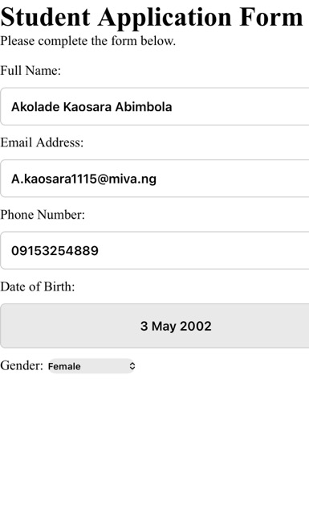

I am an aspiring cyber security professional with an interest in technology, digital security and protecting information systems. Welcome to my personal portfolio
Home
Welcome to my personal portfolio.I am glad to have you here.
Biography
I am a curious, determined, and growth-oriented individual who believes in the importance of continuous learning and self-improvement. I value discipline, creativity, adaptability, and the willingness to embrace new challenges. I enjoy exploring new ideas, acquiring useful knowledge, and developing skills that contribute to both my personal and professional growth. I consider myself someone who is open to opportunities, willing to learn from experiences, and committed to becoming a better version of myself.
About me
I am Akolade Kaosara Abimbola, an aspiring cybersecurity professional with an academic background in Science Laboratory Technology and a growing passion for information technology and digital security.
I am currently pursuing a Bachelor’s degree in Cybersecurity at Miva Open University, where I am developing my knowledge of cybersecurity principles, computer systems, networking, and digital protection.
My interest in cybersecurity comes from my curiosity about how technology works, the importance of protecting sensitive information, and the need to create safer digital environments. I am particularly interested in understanding cyber threats, identifying vulnerabilities, and learning how to prevent and respond to security incidents.
Beyond my academic pursuits, I consider myself a determined, adaptable, and growth-oriented individual who believes in continuous learning and personal development. I am committed to building practical skills, gaining industry knowledge, and developing the competence required to contribute meaningfully to the cybersecurity field.
My long-term goal is to become a skilled cybersecurity professional, continuously expand my technical expertise, and contribute to making the digital world a safer place.
My skills
Basic HTML and Web Development
Introduction to Cybersecurity
Understanding of Cybersecurity Principles
Problem_Solving and Critical Thinking
Research and Information Analysis
Attention to Detail
Continuous Learning and Adaptability
My Projects
1.Personal Portfolio Website
A personal website developed using HTML to showcase my background, education, skills, and professional aspirations.
2. HTML Application Form

A web-based application form created using HTML, incorporating input fields and form elements to collect and organise user information.
3.Cybersecurity Awareness Project.
An educational project focused on understanding common cyber threats, online safety, and practical cybersecurity awareness.